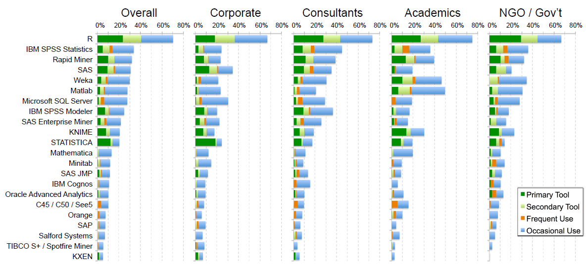
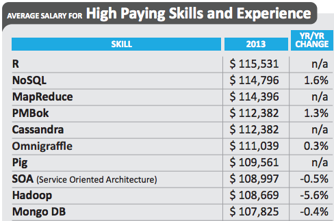

- Numbers Don't Speak for Themselves - Need to be appropriately displayed
- Reduces (at times, eliminates) guesswork, assumptions, gut instinct, intuition, and bias
- Poor charts/graphs/tables are commonplace
- No training
Introduction to Data Visualization and R
Fall 2014
Vivek Patil
Associate Professor of Marketing
Quantitative Information
What is Visualization?
- Based on non-visual data (not from pictures or image processing) - transforms invisible to visible
- Should produce an image/object that communicates predominantly visually
- Must be readable and recognizable- must provide a way to learn something about the data
Few : Quantitative displays to [P]rovide reader with important, meaningful, and useful insight.
Tufte : Should serve a clear purpose - description, exploration, tabulation, or decoration
Why bother with graphs when we have stats? - Anscombe's Quartet
| x1 | y1 | x2 | y2 | x3 | y3 | x4 | y4 | |
|---|---|---|---|---|---|---|---|---|
| 1 | 10.00 | 8.04 | 10.00 | 9.14 | 10.00 | 7.46 | 8.00 | 6.58 |
| 2 | 8.00 | 6.95 | 8.00 | 8.14 | 8.00 | 6.77 | 8.00 | 5.76 |
| 3 | 13.00 | 7.58 | 13.00 | 8.74 | 13.00 | 12.74 | 8.00 | 7.71 |
| 4 | 9.00 | 8.81 | 9.00 | 8.77 | 9.00 | 7.11 | 8.00 | 8.84 |
| 5 | 11.00 | 8.33 | 11.00 | 9.26 | 11.00 | 7.81 | 8.00 | 8.47 |
| 6 | 14.00 | 9.96 | 14.00 | 8.10 | 14.00 | 8.84 | 8.00 | 7.04 |
| 7 | 6.00 | 7.24 | 6.00 | 6.13 | 6.00 | 6.08 | 8.00 | 5.25 |
| 8 | 4.00 | 4.26 | 4.00 | 3.10 | 4.00 | 5.39 | 19.00 | 12.50 |
| 9 | 12.00 | 10.84 | 12.00 | 9.13 | 12.00 | 8.15 | 8.00 | 5.56 |
| 10 | 7.00 | 4.82 | 7.00 | 7.26 | 7.00 | 6.42 | 8.00 | 7.91 |
| 11 | 5.00 | 5.68 | 5.00 | 4.74 | 5.00 | 5.73 | 8.00 | 6.89 |
Anscombe's Quartet - Statistics
| datasource | x-mean | y-mean | x-variance | y-variance | correlation-xy | |
|---|---|---|---|---|---|---|
| 1 | 1 | 9.00 | 7.50 | 11.00 | 4.13 | 0.82 |
| 2 | 2 | 9.00 | 7.50 | 11.00 | 4.13 | 0.82 |
| 3 | 3 | 9.00 | 7.50 | 11.00 | 4.12 | 0.82 |
| 4 | 4 | 9.00 | 7.50 | 11.00 | 4.12 | 0.82 |
Anscombe's Quartet - Graphs

Why bother about visualizations today?

Why bother about visualizations today?
Rise in Data-analysis Driven Journalism
- ESPN backed: FiveThirtyEight.com: Nate Silver (previously NYTimes)
- New York Times' The Upshot - David Leonhardt
- Vox media's Vox.com - Ezra Klein (WaPo), Matt Yglesias (slate.com)
- Guardian's data blog
- The Wall Street Journal
- The Washington Post
Why bother about visualizations today?

Why bother about visualizations today?

Why bother about visualizations today?

What is R?
 |
 |
 |
|---|
- A language and an environment for statistical computing and graphics
- Based on S - now owned by TIBCO
- Elegance - Language for statisticians by statisticians

Pluses
- Free and Open Source -No reinvention of wheel and tinkering opportunities
- Coding in R - Reproducibility
- Routines generally appear in R before any other statistical system

Pluses Continued...
- Graphics - Great.... to ....Mindblowing
- Excellent package distribution system - Internet
- Compatible with most flavors of Unix, Mac OSX, and Windows
- Connectivity with database systems, import from different data formats
- Community support is outstanding - user-base estimates of 250,000-2 million
Limitations
- Command line interface
- Help - IDEs: R Studio, Revolution Analytics and - GUI: Deducer and R Commander
- Provides complete control over what happens but the learning curve could be steep
Other Softwares - (SPSS, SAS, Stata,...)
- Proprietory softwares, functions
- Algorithms developed for users - tinkering/customization ability limited
- Rectangular datasets and one at a time
- Expensive and costs escalate for additional options
R versus Others
| Rexer Analytics survey | 2013 KD Nuggets Poll |
|---|
Source: Muenchen, Robert A, The Popularity of Data Analysis Software., Retrieved 9/1/2014
R versus Others
 |
 |
|---|
R Packages in Different Fields
Source: From the R Project site
My website/blog
- http://patilv.github.io
- Topics of discussion include healthcare, sports, education, and crime, among others
- 2 Posts listed by ComputerWorld magazine as top resources for R statistical programming environment
- An invited post on kdnuggets.com
- A post on NCAA college finances sought by collegeathleticsclips.com
- Visualizations have appeared on si.com
NCAA Basketball- Gonzaga Bulldogs versus Kansas Jayhawks -PPG

Textual Data - Titles of 1755 TED Talks

Superbowl appearances - Wins and Losses
Medicare Provider Charges in Spokane
Enrollments in Modern languages
Violent Crime Rates Across 5 Decades
Campus Security
2014 US Open Nationality of Players

A Recently Released Video on R
From Revolution Analytics
Welcome to the Journey
Read and summarize articles on "Perception and Graph Types": http://bit.ly/gudataviz